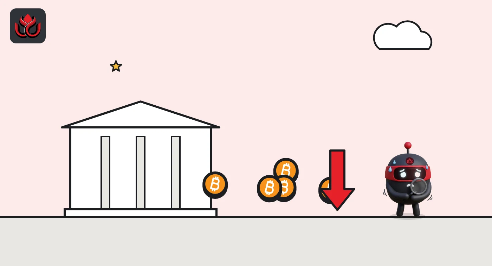

Most Fed officials saw another hike by year-end. Bitcoin ETFs lost $485 million that day
The minutes of the September Fed meeting, released on October 7, showed officials worried that five years of high inflation could stick. Spot bitcoin ETFs had their worst session of the week the same day.
Key points
- Minutes released on October 7, 2026, show most Fed officials expected another rate hike by the end of the year.
- Fed staff did not see inflation returning to the 2% target until 2029.
- US spot bitcoin ETFs lost $484.9 million that day, led by BlackRock's IBIT at $207.7 million, after taking in almost $3 billion in late September.
What the minutes said
Most Federal Reserve officials expected another rate hike before the end of 2026, according to minutes of the September 15 to 16 meeting published on October 7, 2026. The same day, US spot bitcoin exchange-traded funds (ETFs) lost $484.9 million in net outflows. The minutes are a detailed record of the debate behind each rate decision and come out about three weeks after the meeting.
At that meeting, all participants supported raising the target range for the federal funds rate by a quarter point to 3.75% to 4%. The vote among members was 12 to 0. On the next steps, the minutes say most participants assessed that another increase would likely be appropriate by year-end. They added that each meeting would be approached with an open mind and that decisions would depend on incoming information.
That fits the Fed's own projections from September. In the dot plot, 16 of the 18 participants placed the appropriate end-of-2026 rate above the 3.875% midpoint set at the meeting.
Why the Fed is worried
The minutes show a committee concerned about how long inflation has stayed high. Some participants worried that after more than five years of inflation above 2%, high inflation could start to shape what people expect and how firms set wages and prices. Participants generally saw the risks to inflation as tilted to the upside, and some said those risks had grown in recent months.
Fed staff estimated that the PCE price index, the Fed's preferred inflation gauge, rose 3.8% in the 12 months to August, with core PCE at 3.4%. Under a new method the Bureau of Economic Analysis planned to introduce at the end of September, the staff put those figures at 3.6% and 3.2%. The staff forecast had inflation stepping down over the next two years and reaching 2% in 2029.
Bond markets had already moved. Nominal Treasury yields rose around 35 basis points across two-year to 10-year maturities between the July and September meetings, the minutes noted. A basis point is one-hundredth of a percentage point.
How bitcoin funds reacted
The minutes landed on a bad day for crypto funds. US spot bitcoin ETFs recorded net outflows of $484.9 million on October 7, according to Farside Investors. BlackRock's iShares Bitcoin Trust (IBIT) had the largest outflow at $207.7 million, followed by Fidelity's FBTC at $105.1 million and ARK 21Shares' ARKB at $101.7 million. Grayscale's GBTC lost $39.3 million.
Outflows continued on October 8, when $244.1 million left the funds, with FBTC alone losing $197.1 million. Across the week of October 5 to 9, net outflows totaled $678.9 million on Farside's data.
Bitcoin slid over the same stretch. CoinGecko daily prices put it at about $86,490 at the start of October 5 and about $82,560 at the start of October 10.
We cannot say the minutes caused the outflows. Daily ETF flows reflect many decisions, and the Fed's hawkish message had been public since the September projections. A reminder that more hikes were likely did not help.
Day by day: ETF flows that week
The chart shows daily net flows for US spot bitcoin ETFs in the week of the minutes.
US spot bitcoin ETF net flows, October 5 to 9 2026
US$ million
Source: Farside Investors. Weekly total: -$678.9 million.

A strong September run reversed
The week of the minutes reversed a strong run. US spot bitcoin ETFs took in $241.1 million in the week ended October 2 and about $2.98 billion over the seven sessions from September 17 to 25, Farside data show. The best day of that run was September 21, with $999 million of inflows. The swing from the week ended October 2 to the week of the minutes was about $920 million.
For the Fed, the next test was the September inflation report on October 14. A hot number would make the year-end hike most officials expected look even more likely. The report showed prices up 3.7% over 12 months, from 3.4% in August, BLS data showed, with gasoline up 9.1% in the month.
The labor market gave the Fed little reason to hold back. Staff noted in the minutes that the unemployment rate moved down to 4.1% in July and August. Payroll gains picked up in August. With jobs steady and inflation above target, the committee's attention stayed on prices.
Timeline
FOMC raises rates to 3.75% to 4% in a 12 to 0 vote
New administered rates take effect, including 3.90% on reserve balances
Fed releases the September minutes; bitcoin ETFs lose $484.9 million
Weekly ETF outflows total $678.9 million
September CPI shows 3.7% annual inflation
LC Insight analysis
This section is our reading of the facts above, not a statement of fact.
- The line about more than five years of high inflation is the one to remember. Officials care more about credibility than growth risk right now, and that keeps the bar for rate cuts high.
- Inflation at 2% only in 2029 means a long stretch of tight money. That is a harder backdrop for bitcoin than the market enjoyed in 2024 and 2025.
- We read the outflows as de-risking, not a break in long-term demand, given the almost $3 billion that came in over seven sessions in late September. Several weeks like this one in a row would change that view.
What's next
- Whether ETF outflows continue after the first weeks of October
- The next FOMC statement and any change in the expected path
- Monthly CPI and PCE releases
- Treasury yields, which rose about 35 basis points before the September meeting
Disclaimer. This article is based on public information and the sources listed below as of the update time shown. It is for information only and is not investment, legal or tax advice. Figures may change as companies and authorities publish new data.
Sources
- Federal Reserve, Minutes of the FOMC meeting of September 15 to 16, 2026 (released October 7, 2026)
- Federal Reserve, Summary of Economic Projections (September 16, 2026)
- Federal Reserve, FOMC statement (September 16, 2026)
- Farside Investors, Bitcoin ETF flow data
- US Bureau of Labor Statistics, CPI release (October 14, 2026)
- CoinGecko, Bitcoin price data